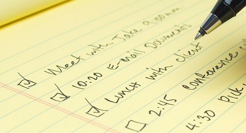

The fourth week of our “100 Days WorkOut” educational program is coming to an end, and during this week we have several times touched the question of rational and effective using of time. What would you do if you had more free time than you have now? Perhaps, it is not that 24 hours a day are not enough for living, but it is that you use them in an inefficient way? I believe that today’s infopost will make you look at your time in a completely different way.
Leonardo da Vinci had 24 hours a day, Nikola Tesla had 24 hours a day and Thomas Edison had 24 hours a day too! But that didn’t stop them from doing all those incredible things they had made. Thus, the question is not actually about how much time you have, but about how you spend this time and what you spend it on.
All written below may sound a bit pathosly, but the fact remains true, these three steps really work and will let you become more productive!
Step one: Create your vision
Before starting a journey, you need to have a clear view of your destination point. It’s not even that aimless wandering is quite merry and romantic, but it’s that aimless wandering won’t help you to reach the desirable goal. In real life it’s all the same, if you want to reach any goals (I’m speaking generally, not only in terms of health and appearance) you, obviously, should set these goals first.
It’s better to start targeting from general things to precise ones. Therefore, the simplest way to start is to close your eyes and to try to imagine yourself in the next few years. The time horizon may vary, but the most common is from 1 to 10 years. Try to make your vision as much accurate and detailed as possible. Now take a blank sheet of paper and write down on it all you’ve just imagined.
Very good, now you have not only your current reality, but also an idea of what you want to reach after some period of time. All you should do is to pave the way from the present moment to the desirable one, that is to say, to determine the tasks, which you will have to accomplish in order to achieve the goals.
Step two: Get rid of garbage
In fact, the first step not only helps you to compile a list of tasks, which will allow you to achieve the desirable result, but also provides another powerful tool! Now you can always question yourself ‒ “Does what I’m doing now get me closer to my goals or not?”
It’s a very simple question, but it will allow you to focus on reaching your goals and reduce the time spent in vain!
Someone once asked the sculptor Michelangelo how he created such magnificent works. “It's very simple,” replied Michelangelo. ”When I look at a block of marble, I see the sculpture inside. All I have to do then is to remove the outer covering.”
Step three: Do the things

After you have only useful things remained (or the vast majority, at least, we are not robots and we need to relax from time to time), it seems that now it’s time to do these things! But there is one thing you should do before this.
Split all your things into 4 groups, classifying them by importance and urgency. That is you’ll have the important and urgent things, important and non-urgent, unimportant and urgent, and, unimportant and non-urgent. Let’s take study and exams as an example. During an academic year the final exam is an important thing, but non-urgent. However, as the session time is getting closer, the final exam becomes more important and more urgent (especially, if you haven’t spent even an hour to prepare for it!). Thus, all your attention should be focused on things from the first two categories and the more things you do from the second category, the fewer things will appear in the second one (if you have the infoposts written in advance, you won’t have to write them in the evening). You should also try hard to decide matters and tasks from the third category, and minimize all that falls into the fourth one.
Actually, these three steps are pretty simple or even banal, but at one time they helped me with my self-organization and that’s why I’ve decided to share this with you. Hope they will help you too (and, perhaps, solve the problem of finding the time for training) and if you know any other useful time-management ‘hints’, write them in comments!
The parable of the time
Imagine there is a bank that credits your account each morning with $86,400. It carries over no balance from day to day. Every evening deletes whatever part of the balance you failed to use during the day. What would you do? Draw out every cent, of course!
Each of us has such a bank. Its name is TIME. Every morning, it credits you with 86,400 seconds. Every night it writes off, as lost, whatever of this you have failed to invest to good purpose. It carries over no balance. It allows no overdraft. Each day it opens a new account for you. Each night it burns the remains of the day. If you fail to use the day's deposits, the loss is yours. There is no going back. There is no drawing against the "tomorrow". You must live in the present on today's deposits. Invest it so as to get from it the utmost in health, happiness, and success.
The clock is running. Make the most of today.
- To realize the value of ONE YEAR, ask a student who failed a grade.
- To realize the value of ONE MONTH, ask a mother who gave birth to a pre-mature baby.
- To realize the value of ONE WEEK, ask the editor of a weekly newspaper.
- To realize the value of ONE HOUR, ask the lovers who are waiting to meet.
- To realize the value of ONE MINUTE, ask a person who missed the train.
- To realize the value of ONE SECOND, ask a person who just avoided an accident.
Treasure every moment that you have. And treasure it more because you shared it with someone special; special enough to spend your time on them. And remember that time waits for no one. Yesterday is history. Tomorrow is mystery. Today is a gift. That's why it's called the present.